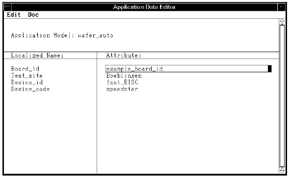

APPLIC_DATA_EDITOR_FORMAT
This is a format specifier against which input data will be checked. You would typically use it whenever you want to force the operator to input one particular value.
It is used in the <action_parameter> description (part of a <level_section>), namely,
["*"][[<parameter_type>]<name>"="<action>["/"<format_spec>]";"
If, for example, the engineer developing the test program already knows that only one type of DUT board will be used at a particular tester, they can combine APPLIC_DATA_EDITOR_FORMAT with one of the <access> types (DIALOG_INPUT or WORKORDER_MANAGER_INPUT) so that when the test program is executed, the user can only enter a specific constant value. For example, with the board_id line included in the SCREEN_DIALOG section of the wafer_auto application model,
{lot:
SCREEN_DIALOG
*Board_id=DIALOG_INPUT/APPLIC_DATA_EDITOR_FORMAT;
*Lot_id=DIALOG_INPUT/REGEXP(nnnn);
*Test_site=APPLIC_DATA_EDITOR_INPUT/REGEXP(string);
*Device_id=APPLIC_DATA_EDITOR_INPUT/REGEXP(string);
*Device_code=APPLIC_DATA_EDITOR_INPUT/REGEXP(string);
*System_id=DIALOG_INPUT/REGEXP(cnnncnn);
::
::
an entry appears in the Application Data Editor (in the Development environment) prompting you for a board_id.
If the engineer enters a value example_board_id, as shown below,

then whenever you execute a workorder for the Workorder Select screen, you must enter the value example_board_id for the board_id entry. Otherwise, the following error message appears to remind you that Board_id data format must be example_board_id.